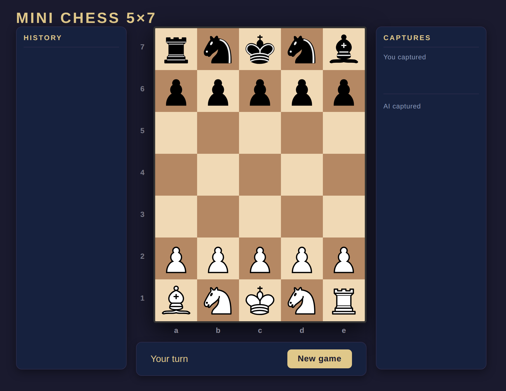

♟️ Simple Chess 5x8
A fast-paced, compact chess variant played on a 5x8 grid. Perfect for quick tactical training or learning the basics without the complexity of a full board.
Quick Start
Passo 1) Clonar o projeto no git e instalar dependencias:
git clone <repo-url>
cd simple-chess
npm install
Passo 2) Executar:
- 2.1) Modo console:
npm start -
2.2) Modo browser:
npm run start:browsere abrir http://localhost:3000/
Observacao: para rodar em um servidor, o servidor WebSocket precisa estar rodando e acessivel.
Documentacao
Installation
Before playing, ensure you have Node.js (version 24 or higher) installed.
The 5x8 Variant Rules
This version is designed for speed while keeping the core "soul" of chess.
| Feature | Description |
|---|---|
| Board | 5 columns (a-e) x 8 rows (1-8). |
| Setup | [B][R][K][R][N] vs [N][R][K][R][B]. |
| Pawns | Move 1 square at a time (no double-push). |
| Promotion | Pawns promote to Rook upon reaching the 8th rank. |
| Castling | Removed for the smaller board. |
| Special | No Queens. No En Passant. |
Gameplay Details
Terminal Mode
Experience chess in its rawest form directly in your shell.
- How to move: Use coordinate notation (e.g., a2a3).
- AI: You play as White; the computer plays as Black.
- Visuals: 8-bit style Unicode sprites on an ANSI checkerboard.

Browser Mode
A modern, point-and-click interface.
- Interface: Real-time legal move highlighting.
- UI: Includes move history and captured piece tracking.
- Tech: Powered by Vue 3 and WebSockets.

Project Details
Architecture
- Engine (src/): Pure Node.js logic for move generation, AI, and state management.
- Frontend (public/): Vue 3 (CDN-based) with WebSockets for the UI.
- AI: Minimax algorithm with Alpha-Beta pruning (Depth 3).
Scripts
npm start
npm run start:browser
npm test
npm run lint
npm run format:check
npm run check
License and Freedom
This project is licensed under the MIT License.
You are free to:
- Copy and use this code for anything.
- Modify it, break it, and fix it.
- Sell it or give it away.
- Use it as a template for your own games.
Join the Project!
This is an open project, and your help is more than welcome! Whether you are a beginner or a grandmaster of code, there is a place for you:
- Fork it: Create your own copy and experiment!
- Improve the AI: Can you make the engine smarter?
- Refine the UI: Add animations, sounds, or new themes.
- Fix Bugs: Found a weird move? Open an Issue or a PR.
- Submit a PR: Made something cool? Send a Pull Request and let's merge it!
Happy coding and checkmate!